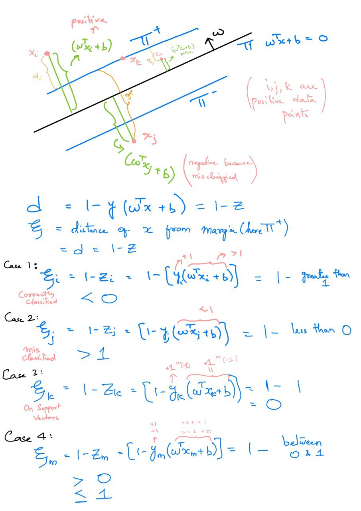
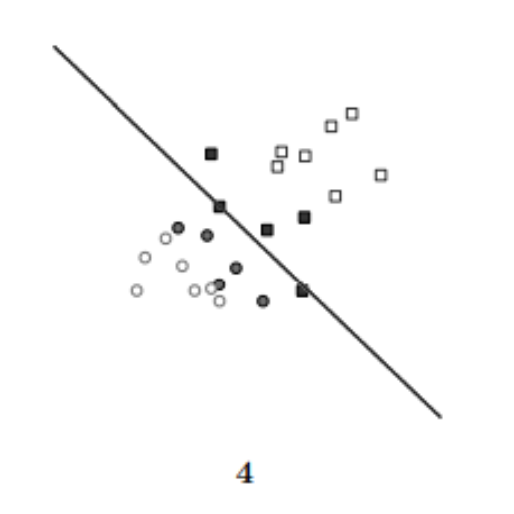
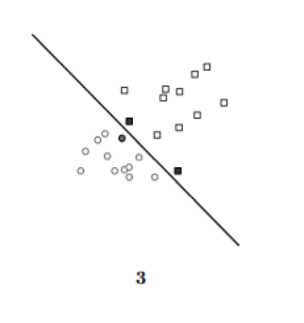
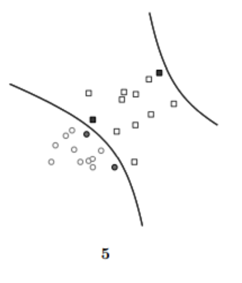
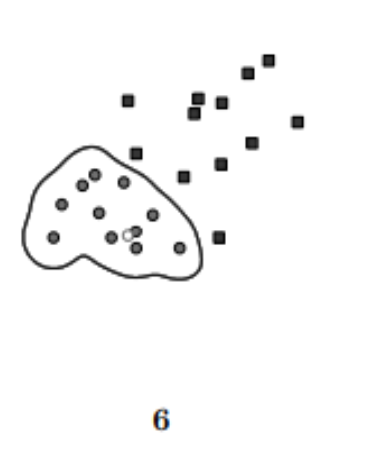
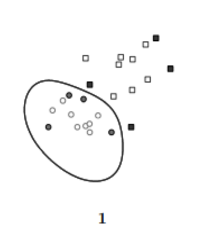

x = np.array([[0.94,0.37, 0.76, 0.56, 0.77 ,0.51 ,0.80],
[-0.88 ,-0.33,-0.68,-0.51 ,-0.75 ,-0.47, -0.76],
[1.32 ,-0.31 ,0.78 ,0.23, 0.47 ,0.10 ,0.90],
[-0.21 ,0.79, 0.13, 0.46,0.27 ,0.54, 0.05],
[ 0.75 ,-0.70 ,0.28 ,-0.22, -0.07 ,-0.34 ,0.39],
[ -0.33, -1.30 ,-0.66, -0.98, -0.86 ,-1.06, -0.57],
[1.27 ,0.81 ,1.14, 0.96 ,1.08, 0.92, 1.15],
[ -0.60, 0.84, -0.13, 0.36, 0.35, 0.48, -0.24],
[ 0.15,-1.35 ,-0.35 ,-0.85 ,-0.47 ,-0.98 ,-0.22],
[-0.33, 0.86, 0.07, 0.46 ,0.37, 0.56, -0.03]])
y = np.array([0.66, -0.60, 0.50, 0.29, 0.03, -0.82, 1.04, 0.12, -0.60, 0.26])Machine Learning Homework II
Linear Regression and Support Vector Machines
Problem 1
In real world applications, there are outliers in data. This can be dealt with using a soft margin, specified in a slightly different optimization problem as below (soft-margin SVM):
\[ min \frac{1}{2}w^Tw + C \sum_{i}^{N} \xi_i where \xi_i \ge 0 \\ s.t. y^{(i)} (w^Tx^{(i)} + b) \ge 1 - \xi_i \]
\(ξi\) represents the slack for each data point \(i\), which allows misclassification of datapoints in the event that the data is not linearly seperable. SVM without the addition of slack terms is known as hard-margin SVM.

1. Intuitively, where do the data points lie relative to where the margin is when \(ξi\) = 0 ? Are all training data points classified correctly?
We know that, \(ξi\) is the distance between the support vector plane (margins) and the incorrectly classified data point. For example, for a data point which belongs to a positive class, \(ξi\) is the distance between the datapoint and \(\pi^+\) margin. If the data point is above the \(\pi^+\) margin, than \(ξi = 0\), since the point was correctly classified.
Similarly for a data point belonging to negative class, \(ξi\) is the distance between that point and \(\pi^-\) margin, if the data point is below the \(\pi^-\) margin, than \(ξi = 0\), since the point was correctly classified.
The Data Points lie on or above(for positive class)/below(for negative class) the margin (support vectors) when \(ξi = 0\) In the above diagram \(x_k\) is such a point and \(x_i\).
Are all training data points classified correctly?
Yes, all the training data points whose \(ξi=0\) are correctly classified.
2.Intuitively, where does each data point lie relative to where the margin is when \(0 < ξi ≤ 1\) ? Are all training data point classified correctly?
As mentioned above, \(ξi\) is the distance from the margin (support vector) to the data point, which is \(1-Z_i\) for incorrectly classified points and 0 otherwise. When \(0 < ξi \le 1\), the point lies between the margin and hyperplane. Also given \(ξi=1\), so the data point can lie on the hyperplane too, when the distance between the margin and data point is 1, which is distance between the margin and hyperplane.
Are all training data points classified correctly?
And, No, All the training points are incorrectly classified while training. During testing we just check where does the point lie realtive to the hyperplane \(f(x) = w^Tx + b\). If \(f(x) > 0\) we say positive class, and if \(f(x) < 0\) we say negative class.
But while training we want the data point of the class to be above the positive margin \(\pi^+\) (\(w^Tx + b \ge 1\)) for positive class and below the negative margin \(\pi^-\)(\(w^Tx + b \le 1\)) for negative class. The soft margin assumes this data points between the margins to be incorrectly classified and add them to the error term during the optimization.
3. Intuitively, where does each data point lie relative to where the margin is when \(ξi > 1\) ? Are all training data points classified correctly?
When \(ξi > 1\), the data points are in the opposite direction of the hyperplane and are more than 1 distance away from the margin. The point is clearly misclassified.
For positive points, the point will lie below the hyperplane which is more than 1 distance below from \(\pi^+\) and for negative points, the point will lie above the hyperplane and more than 1 distance above the \(\pi^-\).
Are all training data points classified correctly?
No, All the training points whose \(ξi>1\) are incorrectly classified.
Problem 2
Support Vector Machines can be used to perform non-linear classification with a kernel trick. Recall the hard-margin SVM from class:
\[ min \frac{1}{2}w^Tw \\ s.t. y^{(i)} (w^Tx^{(i)} + b) \ge 1 \]
The dual of this primal problem can be specified as a procedure to learn the following linear classifier: \[ f(x) = \sum_{i}^{N} \alpha_i y_i (x_i^Tx) + b \] Note that now we can replace \(x_i^Tx\) with a kernel \(k(x_i,x)\), and have a non-linear decision boundary.
In Figure, there are different SVMs with different shapes/patterns of decision boundaries. The training data is labeled as \(y_i ∈ \{−1, 1\}\), represented as the shape of circles and squares respectively. Support vectors are drawn in solid circles/squares. Match the scenarios described below to one of the 6 plots (note that one of the plots does not match to anything). Each scenario should be matched to a unique plot. Explain in less than two sentences why it is the case for each scenario.
1. A soft-margin linear SVM with C = 0.02.
Linear Soft margin, with a very low value of C indicated that the model can have higher values of \(\xi\), and model is fine with some misclassification but desires higher variance, which is depicted by Figure 4.

2. A soft-margin linear SVM with C = 20.
Linear Soft margin, with a high value of C indicated that we want lower values of \(\xi\), and we are not so hard with misclassification and desired higher bias and closer parallel linear margins, which is depicted by Figure 3.

3. A hard-margin kernel SVM with \(k(u, v) = u · v + (u · v)^2\)
Here the hard margin kernel SVM has a kernel which have the function which is hyperbollic, and Figure 5 has a hyperbolla margins.

4. A hard-margin kernel SVM with \(k(u, v) = exp(−5||u − v||^2)\)
With the high value of \(\gamma\) in RBF kernel \(exp(-\gamma|||u − v||^2)\), the kernel value is small and needs more support vectors for classifiaction which is as depiced in Figure 6

5. A hard-margin kernel SVM with \(k(u, v) = exp(−\frac{1}{5}||u − v||^2)\)
With the lower value of \(\gamma\) in RBF kernel \(exp(-\gamma|||u − v||^2)\), the kernel value is higher and we can classify data points using fewer support vectors, which is depiced in Figure 1

Problem 3
Suppose we have the following data on seven variables \(x1, · · · , x7\) and the output \(y\), given as fol- lows:
1. Find the linear regression to this data using the closed form expressions (can use calculators). Does the formula work? If not, explain why not.
xTx = np.matmul(x.T, x)
np.linalg.det(xTx)3.1679045781163164e-16The determinant of \(X^Tx\) is very small. If this is approximated than the determinant will go to zero, and the inverse won’t exist. Since the inverse won’t exist, the problem can not be solved in closed form.
But if we go ahead with the small value of determinant and find the inverse, and continue to find the weights using the closed form where the weights \(\beta = (x^Tx)^{-1} x^T y\). We get the weights of the model.
xTx_inv = np.linalg.inv(xTx)
weights = np.matmul(np.matmul(xTx_inv, x.T), y)
y_hat = np.matmul(x, weights)
rss = np.sum((y-y_hat)**2)
rss6.496738215544207e-05x1,x2,x3,x4,x5,x6,x7 = np.round(weights, 3)
display(Latex(f'$f(x) = ({x1})*x_1 + ({x2})*x_2 + ({x3})*x_3 + ({x4})*x_4 + ({x5})*x_5 + \
({x6})*x_6 + ({x7})*x_7$'))\(f(x) = (-0.395)*x_1 + (-0.865)*x_2 + (0.501)*x_3 + (0.623)*x_4 + (0.021)*x_5 + (0.982)*x_6 + (0.128)*x_7\)
2. Fit a linear ridge regression model to this data using the closed form expressions
LAMBDA = 10e-4
xTx_inv = np.linalg.inv(xTx + LAMBDA*np.eye(7))
weights = np.matmul(np.matmul(xTx_inv, x.T), y)
y_hat = np.matmul(x, weights)
rss = np.sum((y-y_hat)**2)
rss9.375815496416118e-05x1,x2,x3,x4,x5,x6,x7 = np.round(weights, 3)
display(Latex(f'$f(x) = ({x1})*x_1 + ({x2})*x_2 + ({x3})*x_3 + ({x4})*x_4 + ({x5})*x_5 + \
({x6})*x_6 + ({x7})*x_7$'))\(f(x) = (-0.374)*x_1 + (-0.831)*x_2 + (0.487)*x_3 + (0.634)*x_4 + (0.021)*x_5 + (0.936)*x_6 + (0.124)*x_7\)
3. Fit a linear lasso regression model to this data using a computer program - can use packages.
lasso_reg = Lasso(alpha=10e-4, fit_intercept=False).fit(x, y)
y_hat = lasso_reg.predict(x)
rss = np.sum((y-y_hat)**2)
rss0.00015660574547596038x1,x2,x3,x4,x5,x6,x7 = np.round(lasso_reg.coef_, 3)
display(Latex(f'$f(x) = ({x1})*x_1 + ({x2})*x_2 + ({x3})*x_3 + ({x4})*x_4 + ({x5})*x_5 + \
({x6})*x_6 + ({x7})*x_7$'))\(f(x) = (0.452)*x_1 + (0.475)*x_2 + (0.069)*x_3 + (0.0)*x_4 + (0.0)*x_5 + (0.0)*x_6 + (0.0)*x_7\)
4. Use the following subset selection methods to choose the two features that best explain the data:
a. Forward Stepwise
print("feature, RSS Value, Weight")
for i in range(7):
temp_x = x[:,i].copy()
temp_x = temp_x.T
xTx = np.matmul(temp_x.T, temp_x)
xTx_inv = 1/xTx
weight = xTx_inv*np.matmul(temp_x.T,y)
y_hat = weight*temp_x
print(i, np.sum((y-y_hat)**2), weight)feature, RSS Value, Weight
0 1.7680480306099482 0.5005626828719334
1 1.5559485515856177 0.5004526294944694
2 0.34805009659969083 0.9066846986089646
3 0.3239590689664171 0.885160347571954
4 0.10393465264034997 0.9160504114154776
5 0.6325514156337191 0.7849334492064217
6 0.6943223421821415 0.8177314873618696As we can see the feature 5 has the least RSS, so we select feature 5 as the first feature and can go for further selection.
x_5 = x[:,4].copy()
print("feature, RSS Value, Weight Vector")
for i in range(7):
if i == 4:
continue
temp_x = x[:,i].copy()
temp_x = np.array([x_5,temp_x])
temp_x = temp_x.T
xTx = np.matmul(temp_x.T, temp_x)
xTx_inv = np.linalg.inv(xTx)
weights = np.matmul(np.matmul(xTx_inv, temp_x.T), y)
y_hat = np.matmul(temp_x, weights)
print(i, np.sum((y-y_hat)**2), weights)feature, RSS Value, Weight Vector
0 0.08939491221949343 [0.86424766 0.06320073]
1 0.10375136110003312 [ 0.92379547 -0.00764925]
2 0.06418266693959254 [0.68199387 0.26275088]
3 0.09441954725164416 [0.76785156 0.15649981]
5 0.10191595411157069 [0.86769165 0.05015582]
6 0.07826337555928795 [0.77953228 0.15717367]Here, the feature 3 in combination with feature 5 since it has the least RSS value. Also we see that the weight value related to feature 5 has changed from 0.916 to 0.767
b. Backward Stepwise
def get_rss(x):
xTx = np.matmul(x.T, x)
xTx_inv = np.linalg.inv(xTx)
weights = np.matmul(np.matmul(xTx_inv, x.T), y)
y_hat = np.matmul(x, weights)
rss = np.sum((y-y_hat)**2)
return rssi = 6
features = [0,1,2,3,4,5,6]
while i != 1:
comb = list(itertools.combinations(features, i))
rss = []
for j in comb:
temp_x = x.copy()
temp_x = temp_x.T
temp_x = temp_x[list(j)].T
rss.append(get_rss(temp_x))
rss = np.array(rss)
features = list(comb[rss.argmin()])
i -= 1
print("Features Index",features)
6.775622303276243e-05
6.85232574647189e-05
7.037563225111191e-05
7.54452176001615e-05
0.000110076377459281
Features Index [1, 3]In backward stepwise selection, we got the feature 2 and 4 as the best selection.
c. Forward Stagewise
From Forward Stepwise we know that the first feature is feature 5, now we need to find 2nd feature using stagewise increment
x_5 = x[:,4].copy()
weight_5 = 0.9160504114154776
print("feature, RSS Value, Weight")
for i in range(7):
if i == 4:
continue
temp_x = x[:,i].copy()
temp_x = temp_x.T
xTx = np.matmul(temp_x.T, temp_x)
xTx_inv = 1/xTx
weight = xTx_inv*np.matmul(temp_x.T,y)
temp_x = np.array([x_5,temp_x]).T
weights = np.array([weight_5, weight])
y_hat = np.matmul(temp_x, weights)
print(i, np.sum((y-y_hat)**2), weight)
feature, RSS Value, Weight
0 1.4321712093629684 0.5005626828719334
1 1.8985698176821504 0.5004526294944694
2 2.808137102726856 0.9066846986089646
3 2.998941025794095 0.885160347571954
5 2.7347983916718257 0.7849334492064217
6 2.469091091780378 0.8177314873618696As we can see the RSS is least for feature 1.
Hence the two features which get selected are Festure 1 and 5
d. Bestsubset Selection
features = [0,1,2,3,4,5,6]
comb = list(itertools.combinations(features, 2))
rss = []
for c in comb:
temp_x = x.copy()
temp_x = temp_x.T
temp_x = temp_x[list(c)].T
rss.append(get_rss(temp_x))
rss = np.array(rss)
comb[rss.argmin()](0, 3)Features 1 and 4 are the features having the least RSS value in all possible \(7\choose2\) combinations for features
5. Explain all your observations based on the results.
We see that the co-effectients for Linear Regression and Ridge Regression, doesn’t change much and all the features are being used as the co-effecients for all the seven features are non-zero values.
But when we use Lasso regression, we can see that features \(x_1\), \(x_2\) are dominant, and there is little influence of feature \(x_3\), but features 4,5,6 and 7 are having co-effecients 0. Here this is a feature selection and shrinkage methond, where we only need three features to predict the results
Similarly when we performed subset selection different methods yielded different features,
Forward Stepwise selection, is you select the first feature with least RSS which gives feature 5, and than pair with all other features. We find the new \(\beta's\) for each pair and see which gives least RSS. We found that Feature 3 and 5 is selected.
In Backward Stepwise selection, we start with all features, and kept on removing feature which harmed the RSS. We got features 2 and 4
While, in Forward Stagewise, we don’t re train the \(\beta\) after getting the \(\beta\) for first selection of feature 5. We got feature 5 and 1. We also see that Forward Stepwise selection have features selection which gives lower RSS compared which showed that Forward Stepwise is better than Forward Stagewise, but the stagewise selection is computationally better than stepwise, since we don’t train the first selected parameter.
Finally, In subset selection we formed all combinations of features, where we had \(7\choose2\) combinations and calculated RSS for each of the pair and selected the combination with the least RSS. This is computational heavy but gives the best two features. Features 1 amd 4 are selected to best features. This selection method is least computationally effective solution, as it has to find parameters for all combinations.